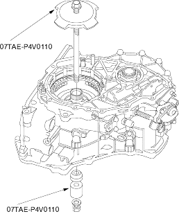
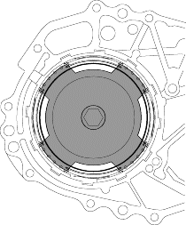
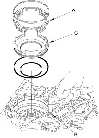

Reverse brake spring compressor, 07TAE-P4V0110
NOTE: Refer to the Exploded View as needed during the following procedure.
- Remove the end cover (three; 6 mm bolts and 11; 8 mm bolts).
- Remove the manual valve body lines A and B.
- Remove the planetary carrier/input shaft assembly and ring gear.
- Remove the snap ring securing the reverse brake discs and plates, then remove the reverse brake and plate, discs, plates and disc spring.
- Remove the snap ring securing the forward clutch end plate, then remove the forward clutch end plate, discs and plates.
- Remove the snap ring securing the forward clutch to the drive pulley shaft, then remove the forward clutch.
- Install the special tool to remove the snap ring securing the reverse brake return spring retainer.

- Compress the return spring with the special tool, then remove the snap ring. Be sure the special tool set over the reverse brake return springs.

- Remove the special tool, then remove the spring retainer/return spring assembly (A).

- Apply air pressure to reverse brake pressure circuit hole (B) to remove the reverse brake piston (C).
- Remove the snap ring retainer from the drive pulley shaft.
- Remove the manual valve body (five bolts) and separator plate.
- Remove the roller and push the control shaft toward the outside of the transmission housing, then remove the intermediate housing (four bolts).